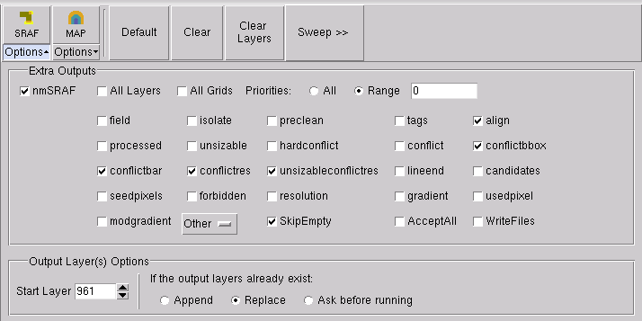

A Calibre nmSRAF
session must be correctly loaded and configured before you can use
it to perform SRAF treatment on your design.
Prerequisites
A
known, working Calibre nmSRAF command set located in one of:
An
SVRF file containing the Calibre nmSRAF command file inline, with
operational cnsraf or mbsraf syntax
A
transcript from a previous Calibre nmSRAF treatment
The
relevant design layout loaded into Calibre WORKbench
Procedure
- Follow the steps in “Creating a Session” to create
a Calibre nmSRAF session.
If you used one of the
methods that loaded an existing file, your RET Flow Tool should
look similar to Figure 1.
If the session text entry
pane is empty, you can:
Use the Copy and Paste options from the Edit menu.
Open the right-mouse context
menu inside the text pane to copy directly from a rule file.
Right-click the session
in the RET Flow tree and choose Open
Setup.
Figure 1. RET Flow Tool, Calibre
nmSRAF Session
- Assign layers in the Setup
Layers Mapping list from the active layout list to the listed layer
outputs.
If you leave a layer set
as Dummy Layer, it is considered to be hidden. Only layers assigned
from the list are considered visible.
If layers are incorrectly
mapped, running the tool may give unexpected results.
- Open the SRAF Options panel
and select checkboxes as needed.
Figure 2. SRAF Options
- Test Calibre nmSRAF by clicking
the SRAF button.
Results
Calibre nmSRAF runs the script, and
one or more result layers are added to the active layout in the
viewer main window.